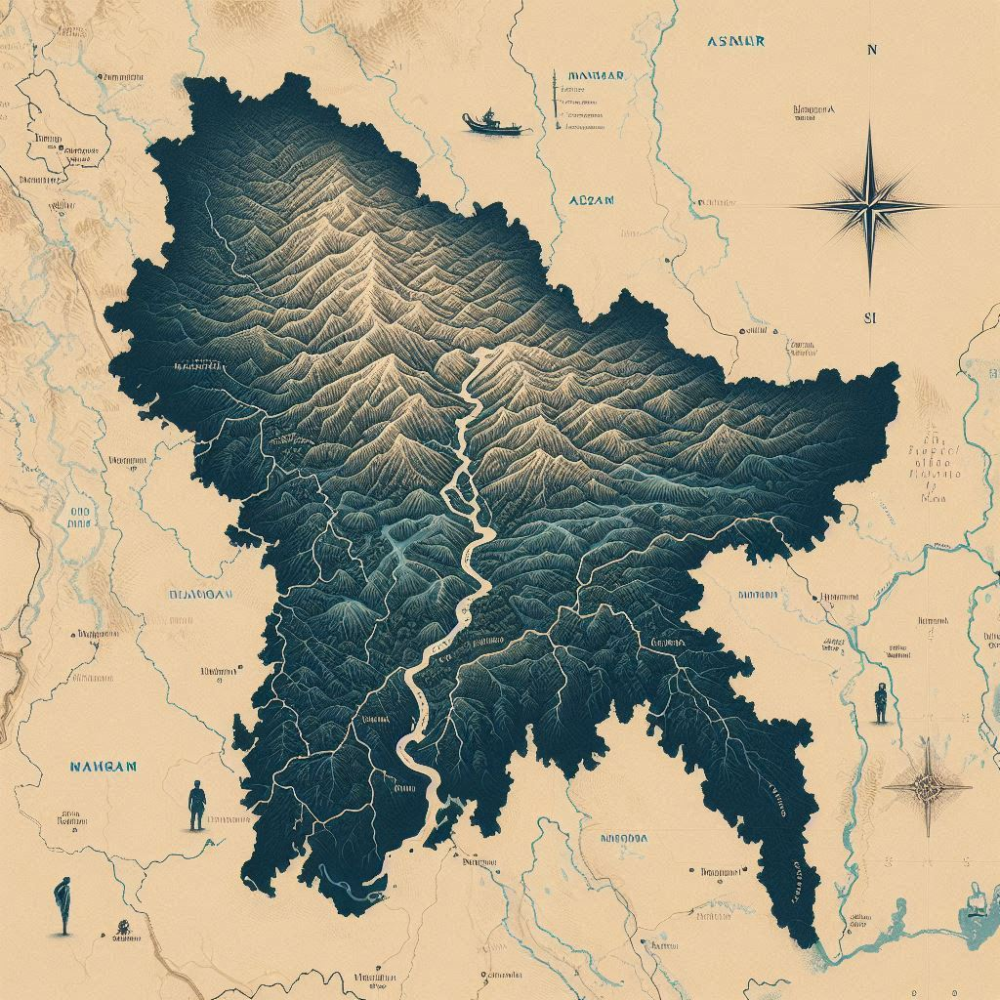
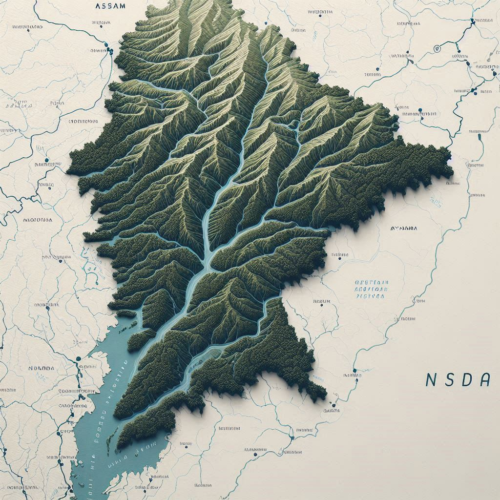

Manipur is a state located in the northeastern part of India. It is bordered by the countries of Myanmar (Burma) to the east and shares internal borders with the Indian states of Nagaland to the north, Mizoram to the south, and Assam to the west. Manipur is part of the Seven Sisters of northeastern India, a region known for its unique culture, diverse communities, and scenic beauty.
Key Features of Manipur's Geographical Location:
Description: The state lies between 24.5° and 28.5° North latitude and 93.03° and 94.78° East longitude.
Area: Manipur covers an area of approximately 22,327 square kilometers, making it one of the smaller states in India by area.
Topography: The state's geography is characterized by its hilly terrain, with the Naga Hills to the north and the Manipur Plateau. The state is also known for its valleys, notably the Imphal Valley, which is the state's capital and an important cultural and political center.
Rivers and Lakes: Manipur is home to several rivers, including the Imphal River, Irang River, and Chindwin River (which flows into Myanmar). The state also boasts Loktak Lake, the largest freshwater lake in northeastern India, known for its unique floating islands.
Climate: Manipur experiences a subtropical highland climate with a significant variation between summer and winter. The state has cool winters, monsoon rains, and moderate summers.
Biodiversity: Its rich natural environment supports a wide range of flora and fauna, with parts of the state covered by forests, which are home to several indigenous species.
This strategic and diverse location gives Manipur a unique position, influencing its cultural practices, language, and traditional livelihood, and making it a significant part of India’s northeastern frontier.
Manipur, often referred to as the "Jewel of India," has a rich and diverse geographical landscape that is both breathtaking and strategically significant. Here's a more detailed exploration of its geographical features:
1. Valleys:
Imphal Valley: The heart of Manipur, Imphal Valley is a fertile, alluvial plain surrounded by hills, making it the most populous region in the state. It is the political, economic, and cultural hub of the state, housing the capital, Imphal. The valley is also known for its picturesque paddy fields and settlements.
Other Small Valleys: Manipur has several smaller valleys, including the Thoubal Valley, Kangpokpi Valley, and Jiribam Valley, each with its unique landscapes and cultural significance.
2. Hills:
Manipur is largely characterized by hilly terrains. The Naga Hills in the north and the Mizo Hills in the south form a natural barrier separating Manipur from neighboring regions.
The Barail Range runs along the state's border with Assam and provides a natural boundary. These hills are home to diverse indigenous tribal communities.
3. Rivers:
The rivers in Manipur are an important aspect of the state’s geography. The Imphal River is the primary river that flows through the Imphal Valley. It supports agriculture and provides water to the local populations.
The Irang River, which originates in the Naga Hills, flows through the southern part of the state before merging with the Barak River in Assam.
The Chindwin River, originating in Myanmar, has its tributaries flowing into Manipur, contributing to its diverse river systems.
4. Lakes:
Loktak Lake is not only the largest lake in Manipur but also the only floating lake in the world. This unique lake, known for its floating phumdis (floating islands), is an important ecological site and plays a vital role in the state's economy and water management.
Keibul Lamjao National Park, located within Loktak Lake, is home to the endangered Sangai deer, the state animal of Manipur. The park is one of the most significant conservation areas in India.
Other smaller lakes include Sendra Lake and Nongmaiching Lake.


5. Climate:
Subtropical Highland Climate: The state experiences a subtropical highland climate, with heavy rainfall in the monsoon season (June to September) and cold winters. Due to its altitude, the temperatures can vary significantly between regions.
Summer: Summers in Manipur are relatively cool compared to the rest of India. The average temperature in the valley can range from 24°C to 32°C during summer, while higher altitudes experience cooler conditions.
Winter: Winters can be cold, especially in the higher regions, with temperatures dipping below 10°C in many parts. Snowfall is common in the northern hills during winter.
6. Flora and Fauna:
Flora: Manipur's forests are rich in biodiversity. They are home to a variety of flora, including bamboo, oak, pine, and rhododendron trees. The hills are also known for medicinal plants and herbs used in traditional healing practices.
Fauna: Manipur's wildlife is diverse, with species like the Sangai Deer (also called the Manipur Brow-antlered Deer), the Himalayan black bear, and various species of birds, reptiles, and insects. Manipur is also home to several migratory birds, making it an important bird-watching destination.
7. Strategic Location:
Manipur’s geographical location, nestled between Myanmar and India’s northeastern states, makes it a strategic border state. It is a vital point of connection between India and Southeast Asia, and historically, it has served as a gateway for trade and cultural exchange between India and Myanmar.
Due to its proximity to Myanmar, it has both cultural and trade relations with Southeast Asian countries, particularly in the fields of art, crafts, and ethnic food traditions.
8. Natural Resources:
Manipur has abundant natural resources, including minerals like limestone, coal, and salt. These resources contribute to the state’s economy, although the potential for large-scale industrial development has been somewhat limited due to its hilly terrain and remote location.
The fertile soil in the valleys, especially in Imphal, supports agricultural practices, with rice being the staple crop. The state's natural resources support local economies and are integral to sustaining the livelihoods of its people.